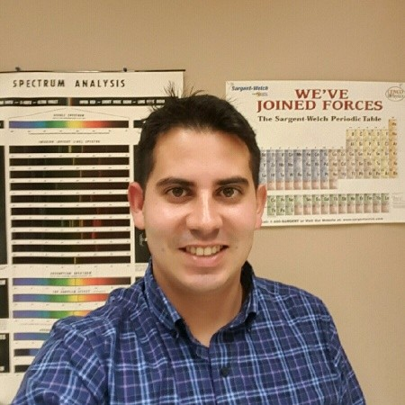

Continually trying to make my kid laugh, even when they tell me that I am not funny. My wife can attest to that, if you are looking for a reference. Always looking for the next new restaurant to add to my top list.
A forever student of science and physics, with a continuing interest in understanding and analyzing complex problems. Currently studying a Masters in Computer Science to elevate problem solving skills through the development of software solutions.
Highly interested in Machine Learning and Artificial Intelligence algorithms and applications of real world problems. Expert in manufacturing failure analysis and process engineering of micro electronic devices.